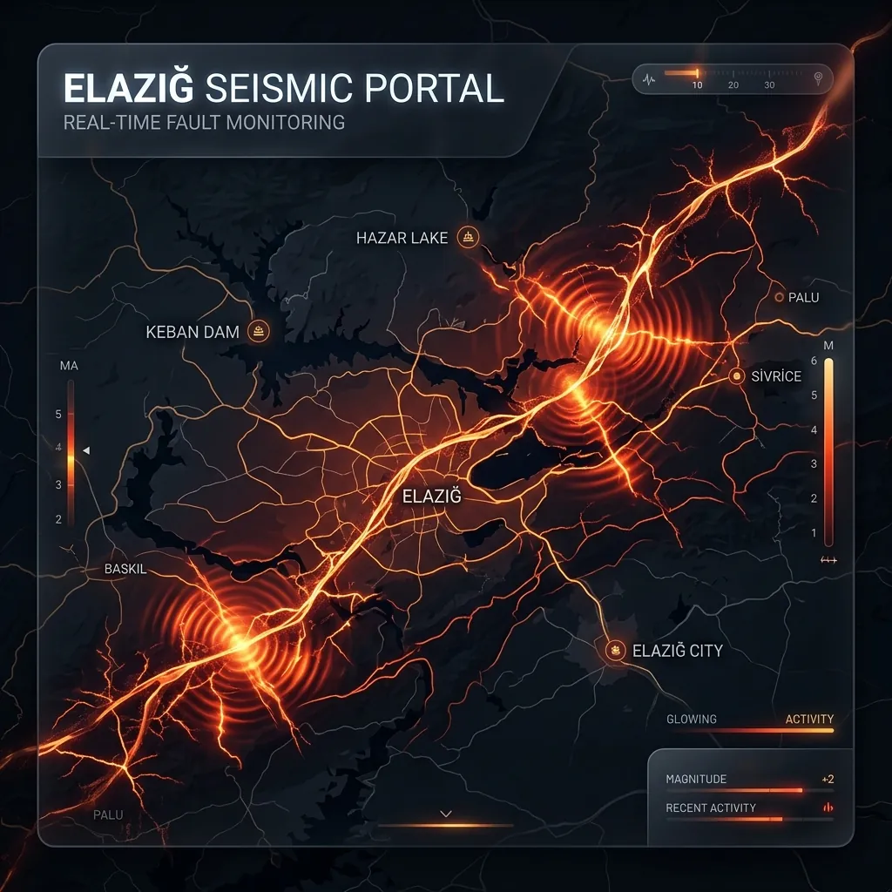

Elazığ'da Az Önce Deprem Oldu mu?
Veriler yükleniyor...
Son Elazığ Depremleri
| Tarih/Saat | Büyüklük | Derinlik | Konum |
|---|---|---|---|
| Kayıtlar yükleniyor... | |||
Elazığ Fay Hattı Üzerinde Hazırlıklı Olmak

Doğu Anadolu Fay Hattı’nın Sivrice segmenti, 2020 yılında 6.8 büyüklüğünde yaşanan depremle Elazığ’ın hem merkezini hem de çevre ilçelerini derinden etkiledi. Yıkımın büyük kısmı yetersiz betonarme birleşimler ve ağır çatı elemanları nedeniyle gerçekleştiği için, özellikle Maden, Kovancılar ve Palu’daki yapı stokunun periyodik mühendislik denetiminden geçirilmesi hayati önem taşıyor. Kentteki jeotermal kaynaklar ve su kanalları nedeniyle bazı mahallelerde zemin nem oranı yüksek; bu da yapı temellerinde oturmaya yol açabileceğinden drenaj sistemlerinin açık tutulması gerekiyor.
Elazığlılar için aile içi haberleşme planı hazırlarken, Harput Kalesi çevresindeki yüksek kotlu alanları alternatif buluşma noktaları olarak değerlendirmek güvenli olabilir. Kış aylarında yoğun kar alan ilçelerde soba ve tüp gibi yakıt kaynakları için karbonmonoksit dedektörü bulundurmak, artçı depremler sırasında kapalı alanlarda zehirlenme riskini azaltır. Ayrıca yerel arama kurtarma ekipleriyle dayanışma içinde kalmak ve mahalle bazlı acil durum WhatsApp gruplarını güncel tutmak, yardım çağrılarını koordine etmeyi kolaylaştıracaktır.
Toplanma Alanları ve Destek
AFAD'ın toplanma alanı servisini buradan kullanarak Elazığ'daki güvenli alanları kontrol edin. Mahallenizdeki cami avluları ve okul bahçeleri genellikle AFAD listesinde yer alır.
Elazığ İçin Deprem Tavsiyeleri
- Deprem çantanıza kışlık kıyafet ve termal battaniye ekleyin.
- Aile bireyleriyle Doğu Anadolu Fay Hattı üzerinde alternatif buluşma noktaları belirleyin.
- Artçı depremler için betonarme binalarda kolon ve kiriş kontrolünü yaptırın.
- Sivrice ve Palu hattındaki köy yollarında ikinci bir yakıt bidonu ve ilk yardım seti stoklayın.
- Bağ evleri veya yazlıklarınız varsa su deposu ve güneş paneli gibi bağımsız enerji kaynaklarını hazır tutun.
- Deprem sigortası poliçenizi her yıl yenileyip fotoğrafını telefon ve bulut hesabınıza kaydedin.